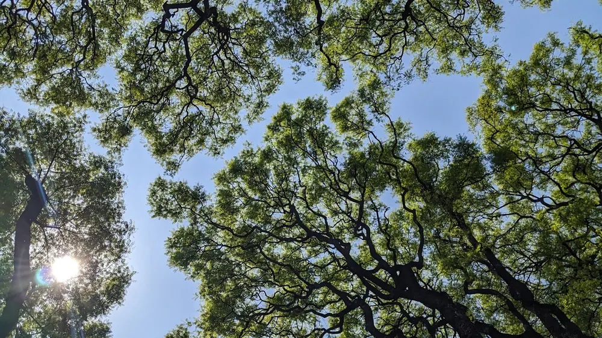
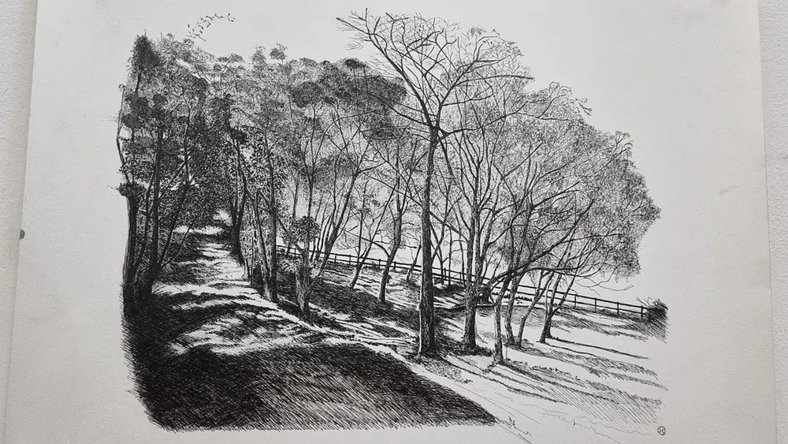
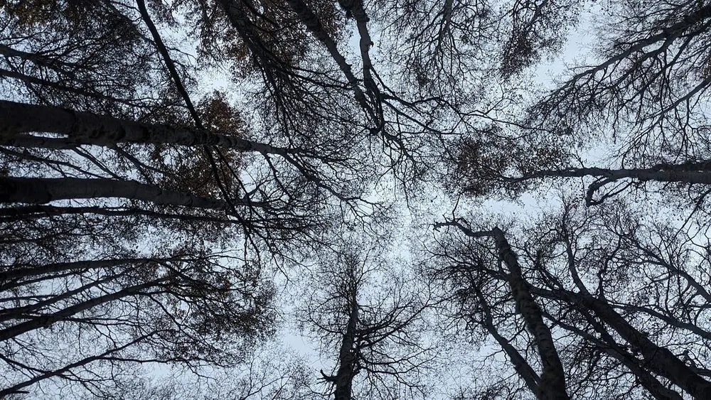
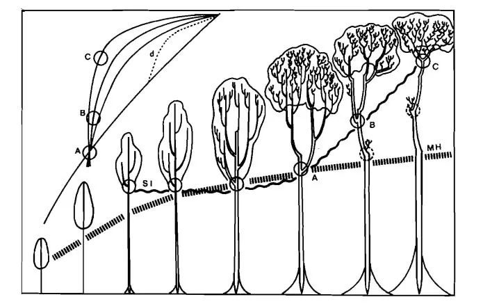
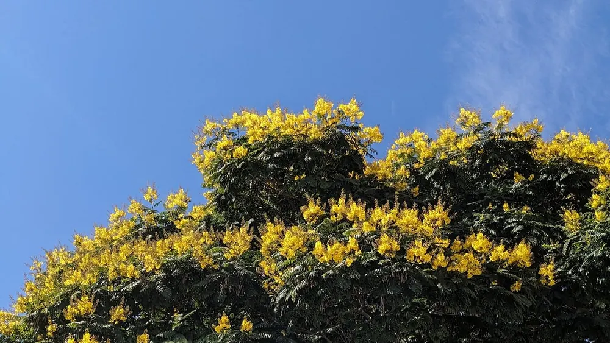
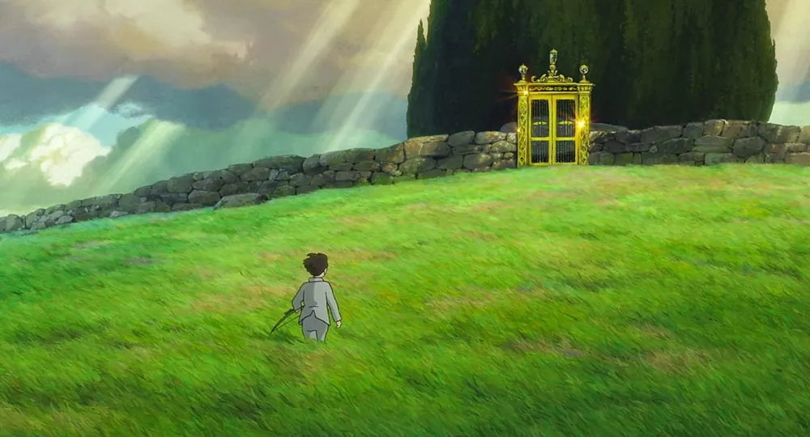
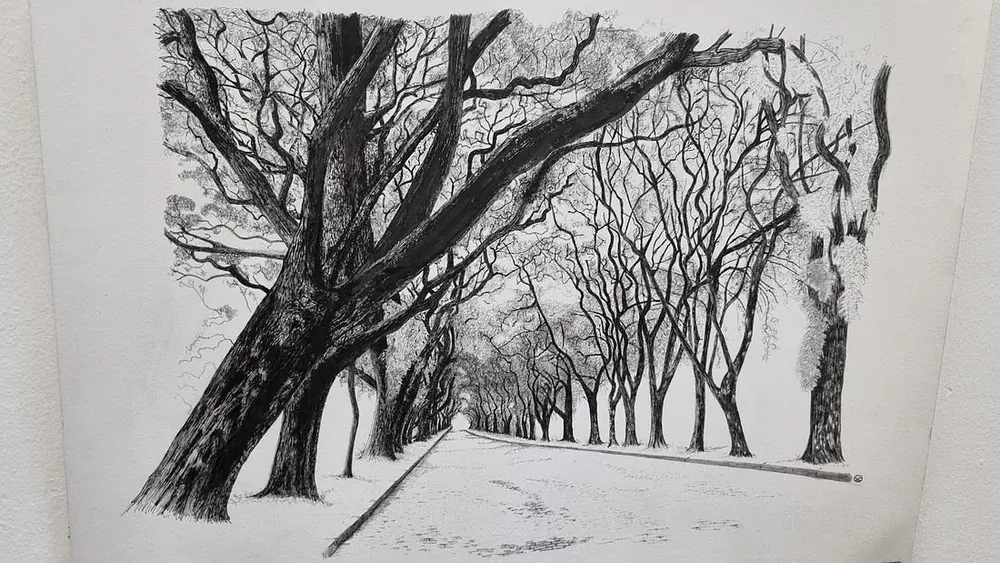
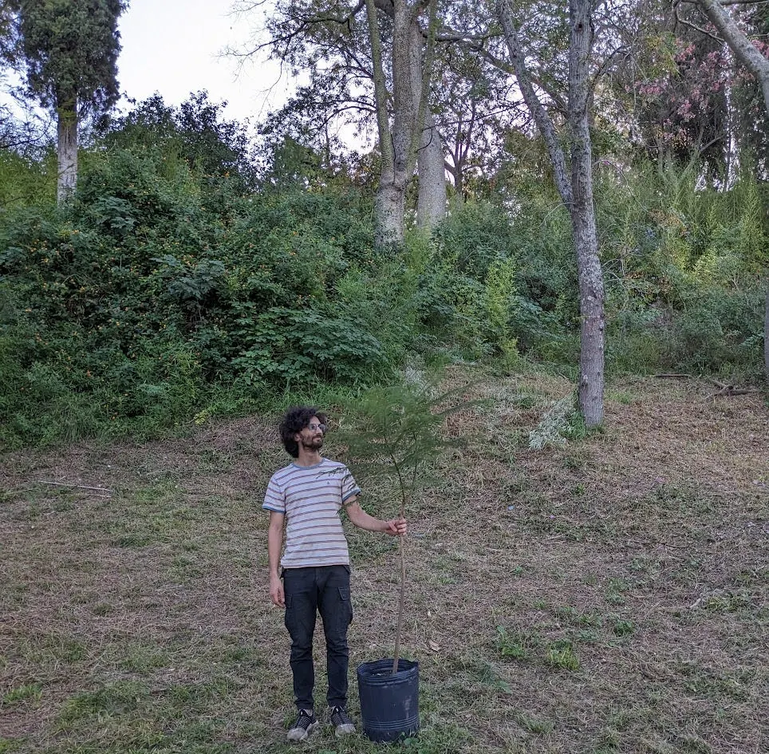

Diario de un Robot · 19 de noviembre de 2025November 19, 2025
La timidez de las copas
La botánica también sabe de organismos que le rehuyen al contacto y nos propone varias hipótesis para entenderla.
This essay is only available in Spanish for now.
La timidez de las copas es la distancia que mantienen los árboles entre sus ramas, dejando un espacio entre las propias y las de sus vecinos que provoca el efecto de intersticios de cielo entre el verde.

Este espacio se suele dar entre árboles de la misma especie, aunque no es exclusivo. Las puntas de sus ramas se acercan en la copa abovedada, pero permanecen distanciadas, quebrando el dosel y dejando pasar rayos de sol por el espacio entre individuos. Diferente es el concepto de komorebi (木漏れ日), la palabra japonesa que parece significar “los rayos de sol que se filtran a través de las hojas de los árboles”, aunque no me sorprendería que pudiesen sintetizar el concepto en una sola palabra usando kanjis.
Parece que su causa es incierta y el mecanismo no está del todo explicado, pero hay esperanza por parte de la ciencia, que todo quiere comprender. La conversación al respecto lleva más de un siglo, pero no hay aún una explicación definitiva (y quien dice, quizás no hay una sola). Todo indicaría un caso de evolución convergente, es decir: a muchos nos pasa lo mismo, pero por distintos motivos. La convergencia es fácil de ver en las alas: alas de murciélago frutero común, de benteveo, de mariposa espejito. Aunque a veces más difícil de ver, la convergencia aparece en muchos otros lugares.
De hecho, los árboles son un ejemplo. Su forma particular, leñosa, con predominancia apical, ramificada y con cierta altura, es una solución a un mismo problema que apareció de forma independiente en varias familias de plantas. Sobre esa convergencia evolutiva (ser un árbol) encontramos montada una segunda: su timidez.

Según una primera hipótesis, puede que la timidez venga de una poda recíproca. Un gesto de limitación por roces. Algo así como los erizos que buscan acercarse, pero se dañan si están demasiado próximos; no sé si Schopenhauer era un observador de las plantas, quizás le hubiese venido bien para sus metáforas pesimistas. En esta teoría, el viento sería un factor que hace impactar las puntas de las ramas unas contra otras. Es por sus segmentos apicales (las puntas) por donde crecen los árboles. Por eso es que una marca en un lugar dado siempre quedará ahí, sin alterar su altura. Una rama no puede elevar el nudo desde donde crece, solo se ensanchará y seguirá la luz. La fluidez del árbol es siempre creciente desde el sitio más alejado de la tierra siguiendo sus tallos.
Hay más opciones posibles, por ejemplo la conocida evasión de la sombra. Similar a lo que hipotetiza sobre nuestra cultura Jun’ichirō Tanizaki (谷崎 潤一郎) en El elogio de la sombra (陰翳礼讃) (un manifiesto sobre la estética japonesa de 1933), los árboles tendrían la misma maña que Occidente: un sobreaprecio por la luz, la claridad, lo brillante, el sol despejado (en contraste con el amor por la sombra de los japoneses). Mientras que algunas plantas requieren humedad, penumbra y crecer debajo de otras para protegerlas del sol abrasador, estos árboles dejarían de crecer apenas sienten la sombra de sus vecinos, evitándola por completo.
De hecho, las gap dynamics (dinámicas de huecos en el dosel) son un concepto dentro de la ecología forestal. Hay casos diferentes que generan estos espacios: el desprendimiento de ramas, su quiebre por el peso de la antigüedad, la acción climática de las tormentas, la propia muerte va dejando huecos. Tánatos, la muerte, hace espacio para que se conforme un microclima particular que favorece la nueva vida, permitiendo luz, viento y humedad controladas para el beneficio del ciclo forestal. Los saplings, retoños de árbol, podrían apuntar a esos huecos entre las copas para encontrar los resquicios de sol que les dejan sus mayores.
Lucrecio, en su Dē rērum natūra (De la naturaleza de las cosas), argumenta en forma de poema que todo puede ser comprendido como leyes naturales sencillas que de forma compuesta producen la complejidad que observamos. Su modelo se basa en una concepción primigenia de los átomos que interactúan de forma regular en el espacio. Para él, los patrones de la vida son consecuencia de estas causas sencillas, empíricas, observables. Podemos dejar entonces a Tánatos, dios menor de la muerte, en paz: según Lucrecio las deidades ya están descansando y poco piensan en nosotros, no son más que las normas de una Naturaleza indiferente las que nos rigen.

Por otro lado, una hipótesis contempla directamente la estructura de crecimiento en fractal de los árboles, presentes en su “reiteración” (término acuñado por R. A. A. Oldeman). En especies fósiles encontramos que los individuos simplemente crecían, una estructura más sencilla de tallo principal y ramas hacia los lados (sin ánimo de querer quitarles el mérito). En su tesis, L’architecture de la forêt guyanaise (La arquitectura del bosque de Guyana), Roelof A. A. Oldeman se hace una pregunta central: “¿Cuál es el comportamiento de los modelos integrados en la densa sociedad del bosque?”. Así es como llega a describir y modelar el fenómeno de reiteración: un árbol a partir del cual crecen arbolitos desde sus puntas en forma de réplicas en menor escala (ver figura debajo). Para nosotros es quizás evidente, es como vemos los árboles en general, pero es una estructura “nueva” en términos evolutivos (nueva pudiendo ser de hace varios millones de años).
Esta reiteración es la que permite a un árbol pasar de su silueta joven en forma de aguja a una versión adulta más esférica. La timidez se manifiesta entonces no solo entre copas de árboles de la misma especie, también aparece entre estos arbolitos que forman la copa globosa de un árbol adulto, maximizando el contacto con la luz y minimizando el contacto entre sí. Praise the sun.

Al comienzo de su tesis, Roelof cita a Giovanni Pico della Mirandola (nombrazo), escritor renacentista de la Oratio de hominis dignitate (Discurso por la dignidad humana). La cita que usa es la siguiente:
En primer lugar, existe una unidad de las cosas por la cual cada cosa es una consigo misma, consiste en sí misma y está relacionada consigo misma. En segundo lugar, existe una unidad por la cual una criatura está unida a todas las demás, y todas las partes del mundo conforman un mundo. —Giovanni Pico della Mirandola, citado por Arthur Koestler.
Así, para el autor, las cosas son en sí mismas pero también lo son con respecto a otras. La realidad se revela como una serie de vínculos, una red infinita. El individuo aislado es un ser fantástico, imaginario. Durante el renacimiento, Giovanni es uno de los primeros (quizás el primero) en cristianizar la Cabalá (קַבָּלָה) (la tradición mística judía que busca entender la naturaleza de Dios y nuestra relación con lo divino). Parte de la tendencia renacentista era revalorizar los patrones y el estudio empírico del mundo, aunque con una marcada tendencia esotérica. La búsqueda de la llamada “armonía universal” pretendía encontrar a Dios escondido en la Naturaleza, dando señales a través de la belleza del mundo y los patrones que lo componen. De todas formas, podemos dejar mi exégesis personal porque la cita es explicada en la propia tesis; traduzco y adapto en simultáneo:
El texto de Pico della Mirandola citado en el epígrafe de la tesis indica el pensamiento del autor: “En primer lugar, cada unidad de las cosas”, cada modelo, “existe en sí misma, tiene su propia forma y desarrollo”, pero, en un nivel superior, “todas estas criaturas elementales están asociadas a otras, y todas las partes de un mundo producen juntas un mundo”, todos los árboles, construidos según sus modelos particulares, construyen juntos lo que, para Oldeman, constituye el modelo forestal: un modelo arquitectónico, como el de cada uno de los árboles y lianas que lo componen. Del mismo modo, la arquitectura de una catedral está formada por la arquitectura elemental de los pilares y la bóveda que sostienen. Pero la arquitectura forestal, más compleja, es de otra naturaleza: está viva; los modelos elementales, integrados en el conjunto, reaccionan unos frente a otros, y luego el bosque, organismo que ha alcanzado un alto grado de integración, responde, como otros organismos menos integrados, tales como el árbol o la célula, a los factores del ambiente: el bosque es sensible a las formas del terreno, a las propiedades del suelo, a las heridas infligidas por los tornados que rompen y arrancan los árboles, a la acción de los grandes animales y de los humanos.

Roelof se basa en Giovanni para poner sobre la mesa un fenómeno esencial en la biología, la aparición de propiedades por interacción entre partes: las propiedades emergentes (coincidencia: Iñaki habló sobre ellas en su newsletter). El ejemplo sencillo de estas propiedades es la imagen que aparece al unir las piezas de un rompecabezas, imagen que se manifiesta por la interacción entre las piezas, que está y no está en cada pieza en sí misma. Es un tema central en el monstruo de Frankenstein: ensamblar piernas, brazos, torso y cabeza no alcanza para hacer una persona; la vida es una propiedad emergente que viene de la vida.
Volviendo a las plantas, parcialmente, la timidez solo tiene sentido si hay un otro, es una propiedad que carece de explicación en aislamiento. Robinson Crusoe no puede ser tímido en su isla, un árbol que crece solo en medio de la sabana tampoco: solo cuando aparece la posibilidad de contacto encontramos la timidez. Su etimología es sencilla, es la cualidad de ser temeroso, proveniente de Timor: la personificación romana del miedo. Hay que tener a qué tener miedo y, aunque el miedo a la soledad existe, los terrores se suelen asociar al contacto, a lo inesperado, a lo incontrolable, al otro.
La tesis describe el bosque como un macroorganismo único, formado por partes que nosotros mismos consideraríamos organismos en pleno derecho: árboles, arbustos, lianas, trepadoras, helechos, parásitos, epífitas, descomponedores… El sesgo botánico de Roelof es notorio, no habla de animales, pero podemos imaginarlos andando por los bosques de Guyana: murciélagos, zarigüeyas, armadillos, monos tití, un sakí barbudo, quizás invisibles al ojo de un investigador obsesionado con las copas de los árboles.
La cooperación entre parientes nos puede sonar natural, pero más de una investigación sigue intentando probarlo de forma definitiva en plantas, y ahí encontramos otra hipótesis a considerar. Más de una vez algo que puede parecernos intuitivo y evidente es particularmente difícil de reproducir y comprobar de forma empírica (a veces incluso imposible). Es el caso de las definiciones de especie o de selección multinivel en evolución, los modelos son funcionales en ciertos ámbitos, pero hacen agua en otros. Es natural, son invenciones nuestras. Pero hacia la empiria vamos. Estudios (hablo en genérico, pero pueden encontrar las fuentes en la bibliografía) buscaron evaluar la timidez de Arabidopsis thaliana, el caballito de batalla y organismo modelo de la botánica, algo así como las ratas de laboratorio para quienes estudian plantas.
Al cultivarla en hileras encontraron que las plantas reconocieron a sus vecinas parientes y reorientaron el crecimiento de sus hojas para no hacerles sombra, un caso de filotaxis particular (phyllo: hoja + taxis: arreglo o distribución). Incluso notaron este arreglo particular aunque implicase hacerse algo de sombra a sí mismas: prefirieron ensimismarse antes que exponerse al contacto de sus semejantes. La norma se confirma con su opuesto. Frente a hileras de plantas de otras especies, las arabidopsis no tienen la misma consideración que con sus familiares: les hacen sombra sin problema y pierden su timidez.

Akira Miyawaki (宮脇 昭), botánico y ecólogo japonés, intuyó que estos comportamientos naturales de las plantas podían ayudarlo. En su búsqueda por recuperar tierras degradadas por la pérdida de vegetación, diseñó un método de reforestación intensiva, hoy llamado método Miyawaki. Sus “bosques de bolsillo” seguían un concepto base: plantar gran variedad de nativas muy cerca unas de otras. Es probable que el concepto esté inspirado en los santuarios Shintō (神道): pequeños montes extremadamente cerrados con el típico arco japonés en la entrada.
Contra la intuición de dejarles el mayor espacio posible para su desarrollo, Miyawaki proponía empaquetar lo más posible las plantas para activar su crecimiento al máximo. Ya sea por cooperación o por competencia, el método parece dar rindes más altos que el espaciado arbolado urbano (aunque como siempre, parece que los números están algo exagerados, ¡ay, el marketing!). Un beneficio es que entran sin problema en los espacios ajustados que tienen nuestras ciudades inmensas, aunque no vendría mal sumar algún que otro parque extenso. Sea timidez o atrevimiento, la metodología podría ser una de las respuestas a ampliar nuestros espacios verdes. Sin embargo, estudios que analizan los mecanismos de fotoinhibición podrían jugar en contra del método japonés. Como siempre, la biología es la ciencia de la excepción; tenemos poco lugar para soluciones totalizadoras y siempre conviene desconfiar de las balas de plata.
Una última explicación posible (aunque esta lista no pretende ser exhaustiva; no es posible ser exhaustivo en la biología, el mundo es, de base, infinito) es evitar el contagio. Quizás la explicación menos romántica, menos propicia a la metáfora, pero bien concreta. Los árboles que mantienen su distancia, que no se animan a rozar sus ramas o que solo lo hacen cuando el viento y el ambiente las obligan, evitan la propagación de larvas que comen las hojas por dentro (los minadores). Susan Sontag en Illness as Metaphor (La enfermedad y sus metáforas) menciona la tendencia que tenemos las personas al discurso sanitarista del anticontagio, del cuerpo como algo sacro y puro, del otro como la fuente de lo profano, de la contaminación. De hecho, los países que se metaforizan como un cuerpo tienen la tendencia a hablar de lo extranjero como virus, plaga, ratas, larvas. Los modelos científicos que se construyen, sean botánicos o sociales, son reflejo de las propias taras mentales que traemos. Son hijos de nuestro mundo interno y a la vez lo crean. En ese ecosistema de ideas que es nuestra conciencia, nuestro saber, persisten las nociones acérrimas que echan raíces, las herbívoras huidizas que fomentan nuestros miedos y las que tienen facilidad para depredar a otras mostrando los dientes.

Por último, lo concreto. Más de una especie presenta esta timidez (que no es exclusivamente botánica), me voy a quedar con un ejemplo local. Quienes me leen de cerca (geográficamente) conocerán las tipas (Tipuana tipu). Pueden verlas en Plaza San Martín, en Barrancas de Belgrano, en la Reserva Ecológica Costanera Sur y en la norte también, en la calle Melián (la más bella de la Ciudad de Buenos Aires), en Misiones, en el bosque húmedo del Noroeste, en medio de una calle en Rosario, en la lluvia de flores amarillas de Cien años de soledad. Gratamente difundidas por Carlos Thays a lo largo y ancho de nuestros parques, son el lugar perfecto para caminar y conversar debajo, detenerse y observarlas en contrapicado, ver el sol pasar a través de las hojas, notar los intersticios de cielo azul entre sus copas, apreciar el ejemplo más cercano de la timidez.
Escribo y las conexiones me resultan lejanas, pero evidentes, los puntos son distantes, pero hay una línea que los une. Los conceptos tienen cierta timidez, una distancia que permite ver los intersticios entre ellos, pero, como las copas de los árboles contra el cielo, pequeños caminos de luz aparecen entre las hojas, solo hay que seguirlos.

- Este correo tomó 271 minutos, gracias a Valentín Muro que me inspira con su formato.
- La idea me fue dada el sábado en medio de la reserva ecológica, gracias a Mariel que me la regaló.
- Este texto lo revisaron personas cercanas, gracias a Iñaki Laborde por las correcciones.
- Compartir y reenviar este correo toma unos 23 segundos, escribirlo tomó 271 minutos, 707 veces más.
Escribí leyendo estas fuentes:
- De la naturaleza de las cosas, Lucrecio.
- Crepy, M. A. & Casal, J. J. (2015). Photoreceptor-mediated kin recognition in plants. New Phytologist, 205(1), 329–338. https://doi.org/10.1111/nph.13040
- van der Zee, J., Wang, H., & Kuiper, P. (2021). Understanding crown shyness from a 3-D perspective. Annals of Botany, 128(6), 725-734. https://doi.org/10.1093/aob/mcab083
- Stallings, A. E. (2023). Crown Shyness. Sewanee Review, 131(2), 352–356. https://doi.org/10.1353/sew.2023.0022
- Tanizaki, Junichirō (1994). El elogio de la sombra. Ed. Siruela. ISBN 8478442588.
- Science Array. (s. f.). Crown Shyness: The Mystery of Tree Canopy Gaps Explained. Science Array. Recuperado de https://sciencearray.com/nature/crown-shyness-tree-canopy-gaps-explained
- Daou, A., Saliba, M., & Kallab, A. (2024). A Review of the Miyawaki Method. SSRN. https://doi.org/10.2139/ssrn.4728239
- Oldeman, R. A., & Oldeman, R. A. A. (1974). L’architecture de la forêt guyanaise. https://horizon.documentation.ird.fr/exl-doc/pleins_textes/divers08-01/07390.pdf
- Sontag, Susan. La enfermedad y sus metáforas / El sida y sus metáforas. Traducido por Mario Muchnik. Barcelona: Debolsillo, 2008.